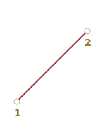
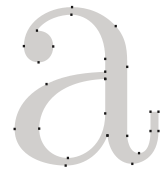
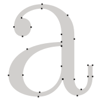
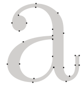

Кривые Безье используются в компьютерной графике для рисования плавных изгибов, в CSS-анимации и много где
еще.
Это очень простая вещь, которую стоит изучить один раз, а затем чувствовать себя комфортно в мире векторной
графики и продвинутых анимаций.
Немного теории
Эта статья дает теоретическое, но очень необходимое представление о том, что такое кривые Безье, в то
время как следующая
показывает, как мы можем использовать их для CSS-анимаций.
Пожалуйста, найдите время, чтобы почитать и поменять концепцию, это сослужит вам хорошую службу.
Их может быть две, три, четыре или больше. Например:
По двум точкам:

По трем точкам:
По четырем точкам:
Если вы посмотрите внимательно на эти кривые, то «на глазок» заметите:
Точки не всегда лежат на кривой. Это совершенно нормально, как именно строится кривая
мы рассмотрим чуть позже.
Степень кривой равна числу точек минус один. Для двух точек - это линейная кривая (т.е. первая),
для трех точек - квадратическая кривая (парабола), для четырех - кубическая.
Кривая всегда находится внутри
выпуклой оболочки,
образованной опорными точками:
Благодаря последнему свойству в компьютерной графике можно оптимизировать проверку пересечения двух кривых.
Если их выпуклые оболочки не пересекаются, то и кривые тоже не пересекутся. Таким образом, проверка
пересечения выпуклых оболочек в первую очередь может дать быстрый ответ на вопрос о наличии пересечения.
Проверить пересечение или выпуклые оболочки гораздо проще, потому что это прямоугольники, треугольники и т.д.,
гораздо более простые фигуры, чем кривая.
Основная ценность кривых Безье для рисования в том, что, двигая точки, кривую можно менять, причем
кривая при этом меняется интуитивно понятным образом.
Попробуйте двигать точки мышью в примере ниже:
1
2
3
4
Как можно заметить, кривая натянута по касательным 1 → 2 и 3 → 4.
После небольшой практики становится понятно, как расположить точки, чтобы получить нужную форму. А соединяя
несколько кривых, можно получить практически что угодно.
Вот некоторые примеры:

Алгоритм «де Кастельжо»
Есть математическая формула для кривых Безье, но давайте рассмотрим ее чуть позже, потому что
Алгоритм де Кастельжо
идентичен математическому определению кривой и наглядно показывает, как она строится.
Рассмотрим его на примере трех точек (точки 1, 2 и 3 можно двигать). Нажатие на кнопку «play» запустит демонстрацию.
t = 0
1
2
3
Построение кривой Безье с 3 точками по «алгоритму де Кастельжо».
Рисуются опорные точки. В примере это 1, 2, 3.
Строятся отрезки между опорными точками в следующем порядке 1 → 2 → 3. На рисунке они
оранжевые.
Параметр t «пробегает» значения от 0 до 1.
Для каждого из этих значений t:
На каждом из оранжевых отрезков берется точка, находящаяся на расстоянии,
пропорциональном t, от его начала. Так как отрезков два, то и точек две.
Например, при t = 0 - точки будут в начале, при t = 0.25 - на
расстоянии в 25% от начала отрезка, при t = 0.5 - 50% (на середине), при
t = 1 - в конце отрезков.
Эти точки соединяются. На рисунке ниже соединяющий их отрезок изображен
синим.
При t = 0.25
При t = 0.5
На получившемся синем отрезке берется точка на расстоянии,
соответствующем t. То есть, для t = 0.25 (левый рисунок) получаем точку
в конце первой четверти отрезка, для t = 0.5 (правый рисунок) - в середине отрезка.
На рисунках выше эта точка отмечена красным.
По мере того, как t «пробегает» последовательность от 0 до 1,
каждое значение t добавляет к кривой точку. Совокупность таких точек для всех
значений образует кривую Безье. Она красная и имеет параболическую
форму на картинках выше.
Был описан процесс для построения по трем точкам. Но то же самое происходит и с четырьмя точками.
Демо для четырех точек (точки можно двигать):
t = 0
1
2
3
4
Алгоритм для 4 точек:
Точки по порядку соединяются отрезками: 1 → 2, 2 → 3, 3 → 4. Получается три
оранжевых отрезка.
Для t на отрезке от 0 до 1"
На отрезках берутся точки, соответствующие текущему t, соединяются.
Получается два зеленых отрезка.
На этих отрезках берутся точки, соответствующие текущему t, соединяются.
Получается один синий отрезок.
На синем отрезке берется точка, соответствующая текущему t. При запуске
примера выше она красная.
Эти точки вместе описывают кривую.
Алгоритм является рекурсивным и может быть обобщен на любое количество опорных точек.
Дано N опорных точек:
Соединяем их, чтобы получить N-1 отрезков.
Затем для каждого t от 0 до 1 берем точку на каждом отрезке
на расстоянии пропорциональном t и соединяем их. Там будет N-2 отрезков.
Повторяем 2 шаг, пока не останется одна точка.
Эти точки образуют кривую.
Запускайте примеры, чтобы ясно увидеть отрезки и то, как строится кривая.
Кривая, которая выглядит как y = 1 / t:
t = 0
1
2
3
4
Зигзагообразные опорные точки тоже работают нормально:
t = 0
1
2
3
4
Создание петли возможно:
t = 0
1
2
3
4
Негладка кривая Безье (да, это тоже возможно):
t = 0
1
2
3
4
Если в описании алгоритма есть что-то непонятное, посмотрите «живые» примеры выше, они наглядно показывают,
как строится кривая.
Поскольку алгоритм является рекурсивным, мы можем построить кривые безье любого порядка, используя
5, 6 или более опорных точек. Но на практике много точек не так полезны. Обычно, мы берем 2-3 точки, а для
сложных линий склеиваем несколько кривых. Это проще для разработки и расчета.
Для задания кривой Безье используются опорные точки. Как видим, они не находятся на кривой, кроме
первой и последней.
Иногда перед нами стоит другая задача: нарисовать кривую через несколько точек, чтобы все они
были на одной гладкой кривой. Эта задача называется
интерполяцией, а она за рамками
нашего изложения.
Для таких кривых существуют математические формулы, например,
полином Лагранжа.
В компьютерной графике сплайн-интерполяция
часто используется для построения плавных кривых, соединяющих множество точек.
Математика
Кривая Безье может быть описана с помощью математической формулы.
Как мы видели, на самом деле нет необходимости ее знать, большинство людей просто рисуют кривую,
перемещая точки с помощью мыши. Но если вы увлекаетесь математикой - вот она.
Координаты кривой с опорными точками Pᵢ: первая опорная точка имеет координаты
P₁ = (x₁, y₁), вторая: P₂ = (x₂, y₂) и т.д., описываются уравнением, зависящим от
параметра t на отрезке [0, 1].


 
